Human colon cancer MERSCOPE with GiottoDisk
Source:vignettes/merscope_human_colon_cancer_giottodisk.Rmd
merscope_human_colon_cancer_giottodisk.Rmd1 The dataset
Vizgen MERSCOPE, human colon cancer, FFPE, region R1 of
202502261437_HuColonCan-FFPE-D2M1883-V2-UltraSm-ST_VMSC18810
(data
release). Panel: 815 gene targets, 85 Blank barcodes.
151,017,583 transcripts, 703,879 segmented cells. Export 33 GB.
| vendor file | size | contents |
|---|---|---|
detected_transcripts.parquet |
3.3 GB | transcript, x, y, z, cell |
detected_transcripts.csv |
17 GB | same table as text, not read |
cell_boundaries.parquet |
1.9 GB | polygons, seven z-planes per cell |
cell_by_gene.csv |
1.2 GB | vendor cell x gene matrix |
cell_metadata.csv |
237 MB | centroid, volume, counts |
cell_numeric_categories.csv |
25 MB | numeric annotations |
cell_categories.csv |
14 MB | categorical annotations |
*.vzg2, *.h5ad
|
7.1 GB, 2.4 GB | viewer bundle, AnnData export, not read |
Inputs read: detected_transcripts.parquet,
cell_boundaries.parquet, cell_by_gene.csv,
cell_metadata.csv. Exports that ship only
detected_transcripts.csv work too: the reader converts the
CSV to parquet once and caches it in the vault.
2 Packages
remotes::install_github(c(
"giotto-suite/GiottoUtils@24774a1",
"giotto-suite/GiottoClass@4a507d60",
"giotto-suite/GiottoVisuals@a939c0f",
"giotto-suite/Giotto@686fba1a",
"giotto-suite/GiottoDisk@674aaf2",
"drieslab/tilework@447503b"))
BiocManager::install("scran")3 Setup
suppressMessages({
library(Giotto); library(GiottoClass); library(GiottoDisk)
library(data.table); library(ggplot2); library(cowplot)
library(Matrix); library(terra)
})
# MERSCOPE region directory (the folder containing cell_by_gene.csv)
MERSCOPE <- "data/region_R1"
# GiottoDisk vault directory, outside any cloud-synced folder
VAULT <- "vault"
dir.create(VAULT, showWarnings = FALSE, recursive = TRUE)
stopifnot(dir.exists(MERSCOPE))
setArtifactDumpDir(VAULT)
th <- theme_classic(base_size = 9)
set.seed(42)
CLUS_COLS <- c("#2B5C9B", "#DD8452", "#3E8E57", "#C44E52", "#8172B3",
"#7BA3D0", "#A0490D", "#DA8BC3", "#4C9F9F", "#5A5A5A",
"#9E3D6B", "#1B7F79")
clus_palette <- function(x) {
lev <- levels(factor(x))
setNames(CLUS_COLS[seq_along(lev)], lev)
}4 Ingest
src <- sourceCreate(VAULT)
g <- createGiottoMerscopeObject(
merscope_dir = MERSCOPE,
backend = src)
instructions(g) <- createGiottoInstructions(
save_plot = FALSE, show_plot = TRUE, return_plot = FALSE)
g## An object of class giotto
## >Active spat_unit: cell
## >Active feat_type: rna
## dimensions : 815, 703879 (features, cells)
## [SUBCELLULAR INFO]
## polygons : cell
## features : rna neg_probe
## [AGGREGATE INFO]
## expression -----------------------
## [cell][rna] raw
## [cell][neg_probe] raw
## spatial locations ----------------
## [cell] raw
##
##
## Use objHistory() to see steps and params usedSetting backend builds the object on disk. The
transcripts go into a tiled parquet point store, the segmentation
polygons into a tiled parquet geometry store, and the cell x gene matrix
from cell_by_gene.csv into a parquet expression store. Only
the per-cell tables, cell metadata and spatial locations, are held in
memory. Blank barcodes become their own
neg_probe feature type, both as transcripts and as the
[cell][neg_probe] expression layer. The y coordinates are
negated on load, so plots have the orientation of the Vizgen images.
On an Apple M2 Ultra (24 cores, 192 GB), building this object took 31
minutes and at most 9 GB of memory, and left a 6.8 GB vault. Nearly all
of that time is spent writing the 151 million transcripts into spatial
tiles; the default sequential future plan was used.
Set load_transcripts = FALSE to skip the transcripts
when only the cell-level analysis is needed; the other layers are built
the same way.
g <- addStatistics(g, expression_values = "raw")
snapshotSave(src, g, name = "aggregated", overwrite = TRUE)## backend : `gDirSource`
## path : vault
cells <- as.data.table(pDataDT(g))
feats <- as.data.table(fDataDT(g))
data.table(item = c("cells", "gene targets", "median transcripts / cell",
"median genes / cell"),
value = c(format(nrow(cells), big.mark = ","),
format(nrow(feats), big.mark = ","),
median(cells$total_expr), median(cells$nr_feats)))| item | value |
|---|---|
| cells | 703,879 |
| gene targets | 815 |
| median transcripts / cell | 102 |
| median genes / cell | 66 |
5 Quality control and filtering
QC plots
spatInSituPlotPoints(g, show_polygon = TRUE, polygon_fill = "total_expr",
polygon_fill_as_factor = FALSE,
polygon_fill_gradient_style = "sequential",
polygon_color = "black", polygon_line_size = 0.01,
background_color = "white")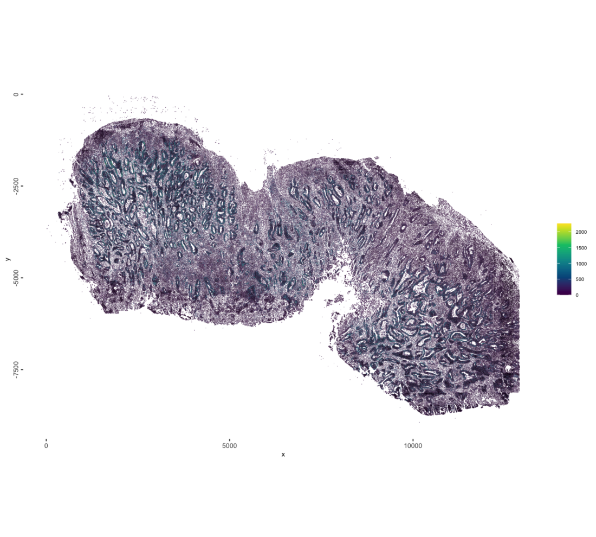
# transcripts per cell
p_tx <- filterDistributions(g, method = "sum", detection = "cells",
scale_axis = "log10", nr_bins = 90,
show_plot = FALSE, return_plot = TRUE) +
labs(title = NULL, x = "transcripts per cell", y = "cells") + th
# genes detected per cell, with the detection floor
p_genes <- filterDistributions(g, method = "threshold", detection = "cells",
nr_bins = 90,
show_plot = FALSE, return_plot = TRUE) +
geom_vline(xintercept = 15, color = "#C44E52", linetype = "dashed") +
labs(title = NULL, x = "genes detected per cell", y = "cells") + th
# cells per gene
p_cells <- filterDistributions(g, method = "threshold", detection = "feats",
scale_axis = "log10", nr_bins = 90,
show_plot = FALSE, return_plot = TRUE) +
labs(title = NULL, x = "cells per gene", y = "genes") + th
plot_grid(p_tx, p_genes, p_cells, nrow = 1)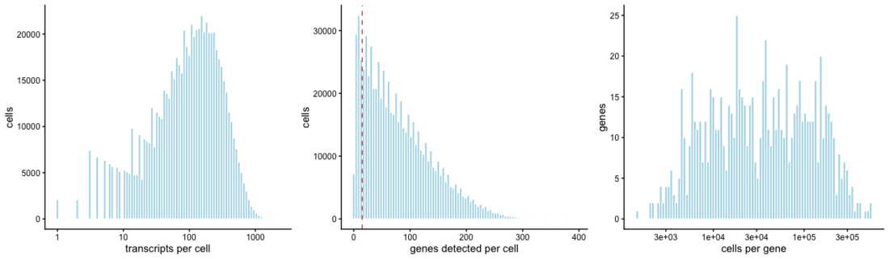
cells <- as.data.table(pDataDT(g))
g <- addCellMetadata(g, new_metadata = data.table(
cell_ID = cells$cell_ID,
qc_fail = ifelse(cells$nr_feats < 15, "removed", "kept")),
by_column = TRUE, column_cell_ID = "cell_ID")
spatInSituPlotPoints(g, show_polygon = TRUE, polygon_fill = "qc_fail",
polygon_fill_as_factor = TRUE,
polygon_fill_code = c(kept = "#B9C6D6", removed = "#C44E52"),
polygon_color = "black", polygon_line_size = 0.01,
background_color = "white")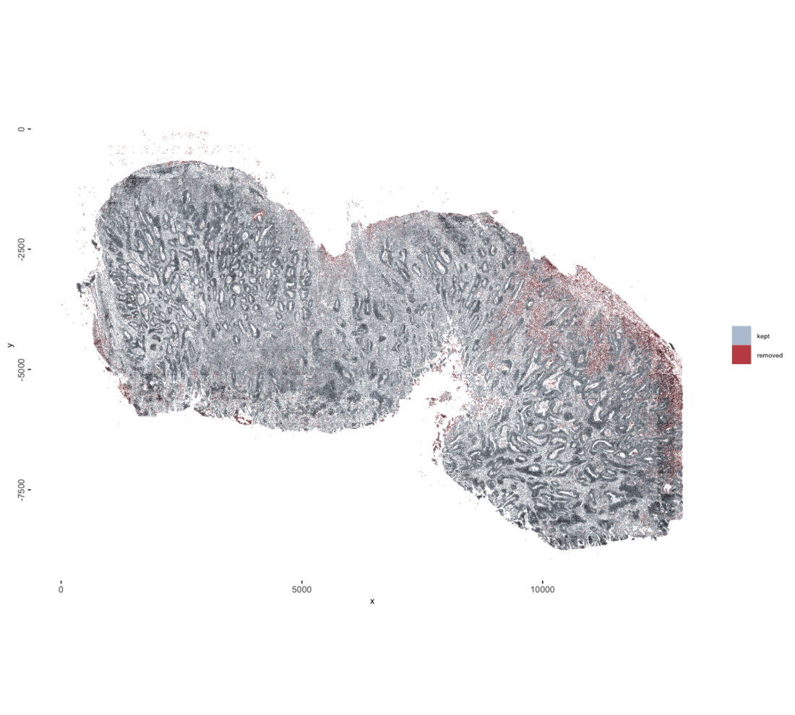
Raising min_det_feats_per_cell discards more poorly
segmented and low-signal cells at the cost of losing real cells with
sparse expression; lowering it keeps those cells but admits fragments
and near-empty polygons into the clustering.
g <- filterGiotto(g, expression_threshold = 1, feat_det_in_min_cells = 10,
min_det_feats_per_cell = 15, verbose = TRUE)##
## Feature type: rna
## Number of cells removed: 88181 out of 703879
## Number of feats removed: 0 out of 8156 Normalization and dimension reduction
Normalization puts cells on a comparable scale so that differences in total counts per cell, which track cell size and detection efficiency, do not dominate the distances used for clustering.
g <- normalizeGiotto(g, norm_methods = "standard", scale_feats = FALSE,
scale_cells = FALSE)
g <- addStatistics(g, expression_values = "normalized")
g <- runPCA(g, expression_values = "normalized", ncp = 100)
screePlot(g, ncp = 30)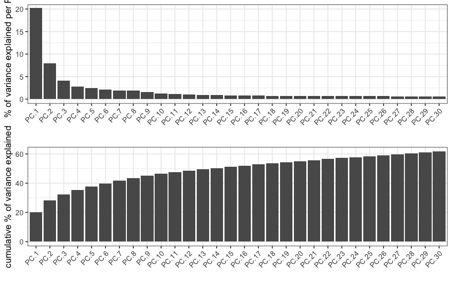
7 Neighbors, UMAP, clustering
g <- createNearestNetwork(g, dim_reduction_to_use = "pca",
dimensions_to_use = 2:15, k = 30, type = "sNN",
minimum_shared = 5, engine = "hnsw")
g <- doLeidenCluster(g, resolution = 0.25, n_iterations = 100)
g <- runUMAP(g, dim_reduction_to_use = "pca", dimensions_to_use = 2:15,
n_neighbors = 30, min_dist = 0.01)
PAL_CLUS <- clus_palette(pDataDT(g)$leiden_clus)
plotUMAP(g, cell_color = "leiden_clus", cell_color_code = PAL_CLUS, point_size = 0.03,
point_shape = "no_border")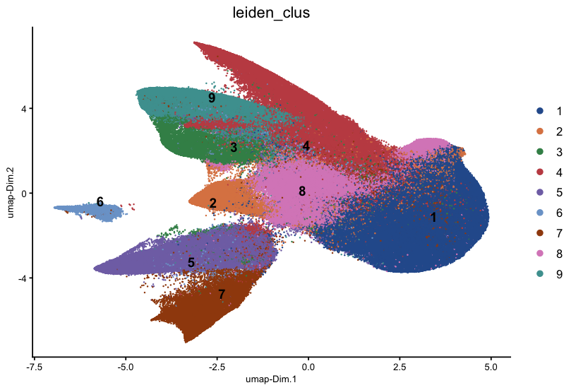
8 Markers
mk <- findMarkers_one_vs_all(g, method = "scran", expression_values = "normalized",
cluster_column = "leiden_clus", min_feats = 3)
setorder(mk, cluster, ranking)
top <- mk[, .(top_genes = paste(head(feats, 6), collapse = ", ")), by = cluster]
top[]## start with cluster 1start with cluster 2start with cluster 3start with cluster 4start with cluster 5start with cluster 6start with cluster 7start with cluster 8start with cluster 9Top marker genes per cluster
| cluster | top_genes |
|---|---|
| 1 | PABPC1, HMGA1, SOX9, MYC, ERBB3, EPCAM |
| 2 | MYBL2, RNF43, VEGFA, E2F1, CDCA7, MKI67 |
| 3 | MMP1, MMP3, SOD2, COL3A1, COL1A2, CXCL8 |
| 4 | COL1A2, COL3A1, COL4A1, VWF, PLVAP, EGFL7 |
| 5 | CD74, ITGB2, LYZ, CIITA, CYBB, C1QC |
| 6 | MZB1, XBP1, IRF4, POU2AF1, DERL3, PRDM1 |
| 7 | IL2RB, TRAC, ZAP70, CD2, FYN, ITGB2 |
| 8 | RNF43, VEGFA, ERBB3, RBM39, SOX9, EPCAM |
| 9 | COL5A1, THBS2, CDH11, COL1A2, PDGFRB, COL3A1 |
sel <- unique(mk[, head(feats, 3), by = cluster]$V1)
dotPlot(g, feats = sel, cluster_column = "leiden_clus")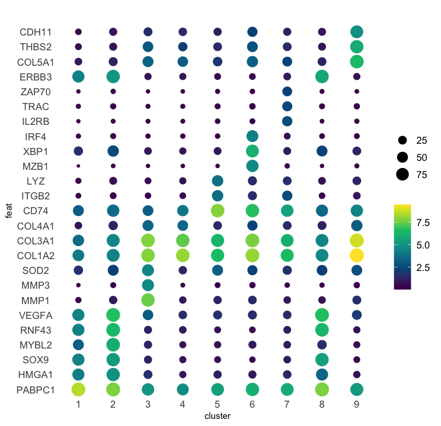
9 Cell types
Each Leiden cluster is named from its top markers in section 8.
LABELS <- c("1" = "Epithelial 1", "2" = "Proliferating epithelial",
"3" = "Inflammatory fibroblast", "4" = "Endothelial",
"5" = "Myeloid", "6" = "Plasma", "7" = "T/NK",
"8" = "Epithelial 2", "9" = "Fibroblast")
g <- annotateGiotto(g, annotation_vector = LABELS,
cluster_column = "leiden_clus", name = "cell_type")
cells <- as.data.table(pDataDT(g))
PAL <- clus_palette(cells$cell_type)
ct <- cells[, .(cells = .N), by = .(cell_type)]
ct[, pct := round(100 * cells / sum(cells), 1)][order(-cells)]| cell_type | cells | pct |
|---|---|---|
| Epithelial 1 | 188013 | 30.5 |
| Endothelial | 104017 | 16.9 |
| Epithelial 2 | 86986 | 14.1 |
| Myeloid | 69248 | 11.2 |
| Fibroblast | 55973 | 9.1 |
| T/NK | 42793 | 7.0 |
| Proliferating epithelial | 32755 | 5.3 |
| Inflammatory fibroblast | 23226 | 3.8 |
| Plasma | 12687 | 2.1 |
setorder(ct, -cells); ct[, cell_type := factor(cell_type, levels = rev(cell_type))]
ggplot(ct, aes(cell_type, cells, fill = cell_type)) +
geom_col(width = 0.75) +
scale_fill_manual(values = PAL, guide = "none") +
coord_flip() +
geom_text(aes(label = formatC(cells, big.mark = ",", format = "d")),
hjust = -0.1, size = 2.6) +
scale_y_continuous(expand = expansion(mult = c(0, 0.22))) +
labs(x = NULL, y = "cells") + th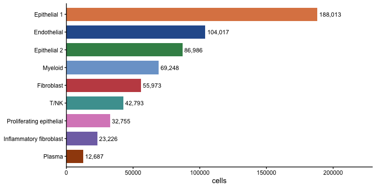
snapshotSave(src, g, name = "clustered", overwrite = TRUE)## backend : `gDirSource`
## path : vault10 The slide
spatInSituPlotPoints(g, show_polygon = TRUE, polygon_fill = "cell_type",
polygon_fill_as_factor = TRUE, polygon_fill_code = PAL,
polygon_color = "black", polygon_line_size = 0.01,
background_color = "white")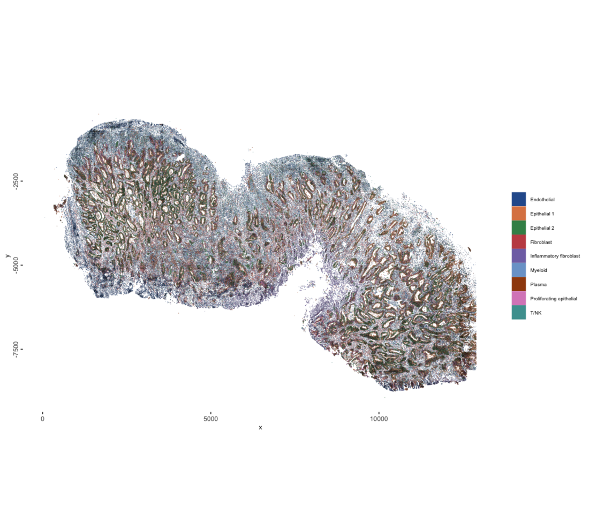
# segmentation polygons filled by cell type
p_facets <- spatInSituPlotPoints(g, show_polygon = TRUE, polygon_fill = "cell_type",
polygon_fill_as_factor = TRUE, polygon_fill_code = PAL,
polygon_color = NA, background_color = "white",
show_legend = FALSE, show_plot = FALSE, return_plot = TRUE)
# 40,000 cells in gray behind every panel
bgv <- p_facets$layers[[1]]$data[poly_ID %in% sample(unique(poly_ID), min(uniqueN(poly_ID), 40000L)),
.(x, y, poly_ID)]
p_facets$layers <- c(geom_polygon(data = bgv, aes(x, y, group = poly_ID),
fill = "#E8E8E8", color = NA, inherit.aes = FALSE),
p_facets$layers)
# one panel per cell type
p_facets + facet_wrap(~cell_type, ncol = 3) +
theme(strip.background = element_blank(),
strip.text = element_text(size = 13, face = "bold"),
panel.spacing = unit(10, "pt"))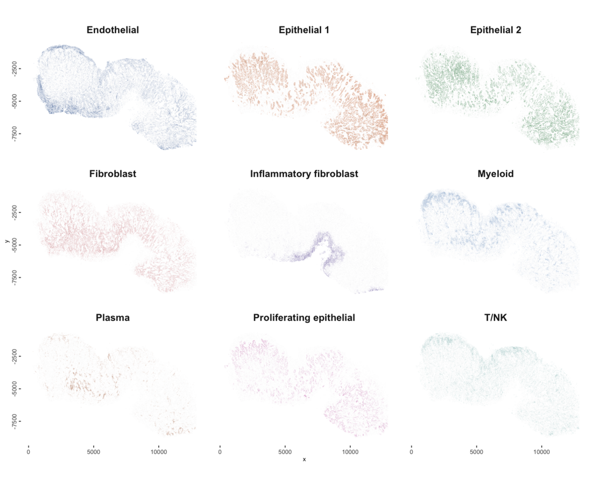
11 Cells and transcripts in a 400 um window
# 400 um window at the center of the section
sl <- as.data.table(getSpatialLocations(g, output = "data.table"))
ctr <- c(median(sl$sdimx), median(sl$sdimy))
XL <- ctr[1] + c(-200, 200)
YL <- ctr[2] + c(-200, 200)
# segmentation polygons filled by cell type
p_types <- spatInSituPlotPoints(g, show_polygon = TRUE, polygon_fill = "cell_type",
polygon_fill_as_factor = TRUE, polygon_fill_code = PAL,
polygon_color = "black", polygon_line_size = 0.12,
background_color = "white", xlim = XL, ylim = YL,
show_plot = FALSE, return_plot = TRUE)
p_types + coord_fixed(xlim = XL, ylim = YL, expand = FALSE)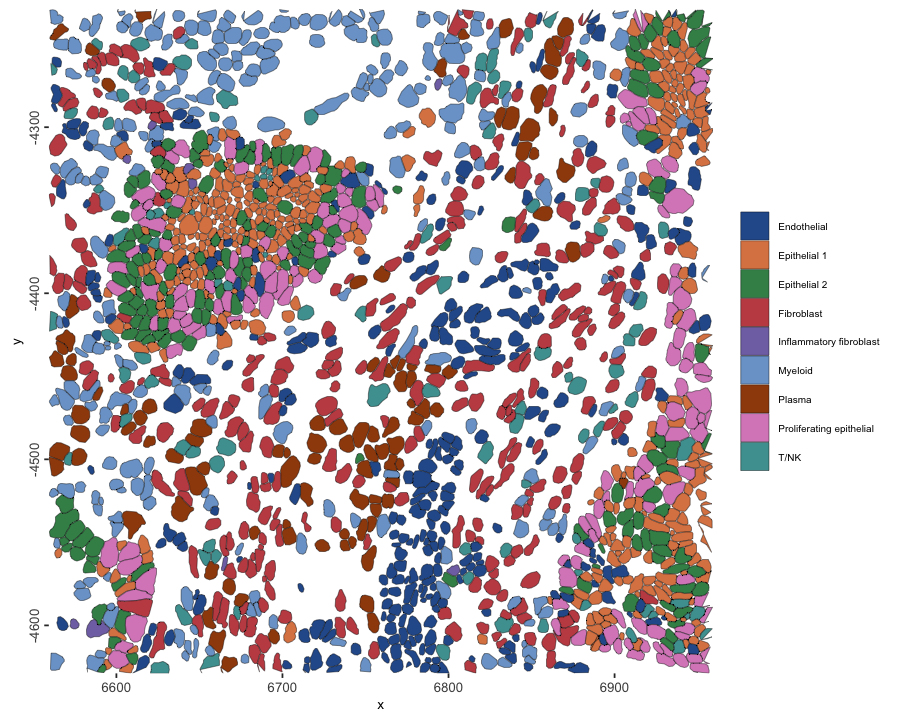
The transcripts are on disk too. xlim and
ylim crop inside the point store, so only the window’s
transcripts are read, not the 151 million on the slide. One marker gene
per cell type, colored like its cell type, over the same polygons:
# one marker per cell type (from the marker table), colored like the cell type
MARKERS <- c(MYC = "Epithelial 1", MKI67 = "Proliferating epithelial",
MMP1 = "Inflammatory fibroblast", VWF = "Endothelial",
LYZ = "Myeloid", MZB1 = "Plasma", TRAC = "T/NK",
EPCAM = "Epithelial 2", THBS2 = "Fibroblast")
p_tx <- spatInSituPlotPoints(g, feats = list(rna = names(MARKERS)),
feats_color_code = setNames(PAL[MARKERS], names(MARKERS)),
use_overlap = FALSE, point_size = 0.3,
show_polygon = TRUE, polygon_fill = "cell_type",
polygon_fill_as_factor = TRUE, polygon_fill_code = PAL,
polygon_alpha = 0.12, polygon_color = "grey35",
polygon_line_size = 0.1, background_color = "white",
xlim = XL, ylim = YL,
show_plot = FALSE, return_plot = TRUE)
p_tx + coord_fixed(xlim = XL, ylim = YL, expand = FALSE)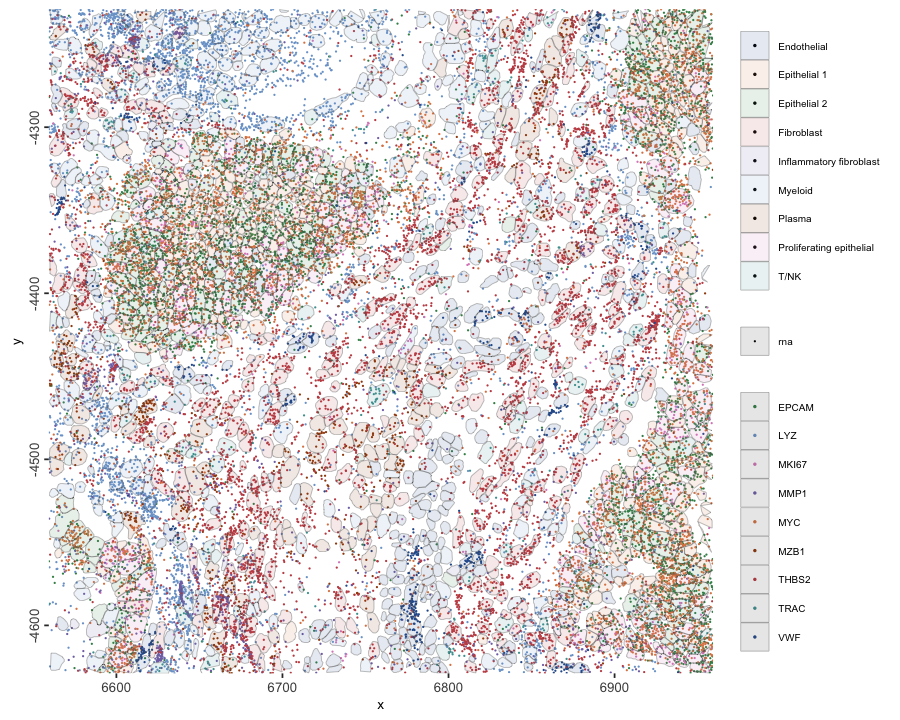
12 Spatial neighborhood composition
Each cell is linked to its twenty nearest neighbors.
cellProximityEnrichment() counts the links between each
pair of cell types and compares the counts with 1,000 random relabelings
of the cells, so a log2 enrichment above 0 means the pairing is more
common than chance. The clustering used no spatial information, so this
tests whether the expression-defined populations are spatially
organized.
g <- createSpatialNetwork(g, method = "kNN", k = 20, name = "kNN20")
cpe <- cellProximityEnrichment(g, cluster_column = "cell_type",
spatial_network_name = "kNN20",
number_of_simulations = 1000)
head(cpe$enrichm_res[type_int == "hetero"][order(-enrichm)], 8)[
, .(pair = unified_int, enrichment = round(enrichm, 2), p.adj_higher)]| pair | enrichment | p.adj_higher |
|---|---|---|
| Fibroblast–Plasma | 1.10 | 0.000999 |
| Myeloid–T/NK | 0.84 | 0.000999 |
| Plasma–T/NK | 0.83 | 0.000999 |
| Endothelial–Fibroblast | 0.59 | 0.000999 |
| Endothelial–Plasma | 0.57 | 0.000999 |
| Epithelial 1–Proliferating epithelial | 0.52 | 0.000999 |
| Fibroblast–T/NK | 0.49 | 0.000999 |
| Fibroblast–Myeloid | 0.44 | 0.000999 |
cellProximityHeatmap(g, CPscore = cpe, order_cell_types = TRUE, scale = FALSE)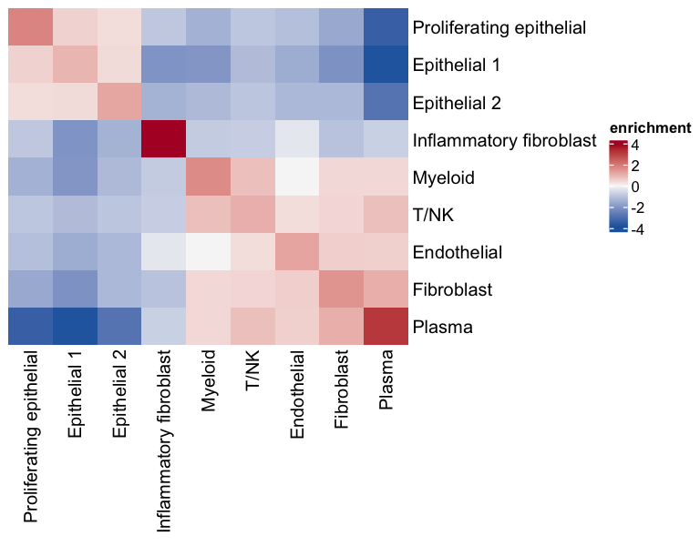
13 Session
## R version 4.5.1 (2025-06-13)
## Platform: aarch64-apple-darwin20
## Running under: macOS Sonoma 14.5
##
## Matrix products: default
## BLAS: /Library/Frameworks/R.framework/Versions/4.5-arm64/Resources/lib/libRblas.0.dylib
## LAPACK: /Library/Frameworks/R.framework/Versions/4.5-arm64/Resources/lib/libRlapack.dylib; LAPACK version 3.12.1
##
## locale:
## [1] en_US/en_US/en_US/C/en_US/en_US
##
## time zone: America/New_York
## tzcode source: internal
##
## attached base packages:
## [1] stats graphics grDevices utils datasets methods base
##
## other attached packages:
## [1] future_1.70.0 terra_1.9-11 Matrix_1.7-3
## [4] cowplot_1.2.0 ggplot2_4.0.2 data.table_1.18.2.1
## [7] GiottoDisk_0.0.0.6 Giotto_4.3.5 GiottoClass_0.7.18
## [10] arrow_23.0.1.2
##
## loaded via a namespace (and not attached):
## [1] RColorBrewer_1.1-3 shape_1.4.6.1
## [3] jsonlite_2.0.0 wk_0.9.5
## [5] magrittr_2.0.4 magick_2.9.1
## [7] farver_2.1.2 rmarkdown_2.31
## [9] GlobalOptions_0.1.4 vctrs_0.7.2
## [11] Cairo_1.7-0 memoise_2.0.1
## [13] GiottoUtils_0.2.7 htmltools_0.5.9
## [15] S4Arrays_1.8.1 BiocNeighbors_2.2.0
## [17] SparseArray_1.8.1 sass_0.4.10
## [19] parallelly_1.46.1 bslib_0.10.0
## [21] htmlwidgets_1.6.4 plotly_4.12.0
## [23] cachem_1.1.0 igraph_2.2.2
## [25] iterators_1.0.14 lifecycle_1.0.5
## [27] pkgconfig_2.0.3 rsvd_1.0.5
## [29] R6_2.6.1 fastmap_1.2.0
## [31] clue_0.3-68 GenomeInfoDbData_1.2.14
## [33] MatrixGenerics_1.20.0 digest_0.6.39
## [35] colorspace_2.1-2 S4Vectors_0.48.1
## [37] dqrng_0.4.1 irlba_2.3.7
## [39] GenomicRanges_1.60.0 beachmat_2.24.0
## [41] filelock_1.0.3 labeling_0.4.3
## [43] progressr_0.19.0 httr_1.4.8
## [45] polyclip_1.10-7 abind_1.4-8
## [47] compiler_4.5.1 doParallel_1.0.17
## [49] bit64_4.6.0-1 withr_3.0.2
## [51] S7_0.2.1 backports_1.5.1
## [53] BiocParallel_1.42.2 viridis_0.6.5
## [55] ggforce_0.5.0 R.utils_2.13.0
## [57] sedonadb_0.5.0.9000 MASS_7.3-65
## [59] DelayedArray_0.34.1 rjson_0.2.23
## [61] bluster_1.18.0 gtools_3.9.5
## [63] GiottoVisuals_0.2.16 tools_4.5.1
## [65] otel_0.2.0 future.apply_1.20.2
## [67] R.oo_1.27.1 glue_1.8.0
## [69] dbscan_1.2.4 grid_4.5.1
## [71] checkmate_2.3.4 cluster_2.1.8.3
## [73] generics_0.1.4 gtable_0.3.6
## [75] R.methodsS3_1.8.2 tidyr_1.3.2
## [77] metapod_1.18.0 BiocSingular_1.24.0
## [79] tidygraph_1.3.1 ScaledMatrix_1.16.0
## [81] XVector_0.48.0 BiocGenerics_0.54.1
## [83] tilework_1.0.0.9000 foreach_1.5.2
## [85] ggrepel_0.9.8 pillar_1.11.1
## [87] limma_3.64.3 nanoarrow_0.9.0
## [89] RcppHNSW_0.7.0 circlize_0.4.18
## [91] dplyr_1.2.0 tweenr_2.0.3
## [93] lattice_0.22-7 bit_4.6.0
## [95] tidyselect_1.2.1 ComplexHeatmap_2.26.1
## [97] locfit_1.5-9.12 SingleCellExperiment_1.30.1
## [99] scuttle_1.20.0 knitr_1.51
## [101] gridExtra_2.3 IRanges_2.42.0
## [103] Seqinfo_1.0.0 edgeR_4.6.3
## [105] SummarizedExperiment_1.38.1 scattermore_1.2
## [107] stats4_4.5.1 xfun_0.61
## [109] graphlayouts_1.2.3 Biobase_2.68.0
## [111] statmod_1.5.1 matrixStats_1.5.0
## [113] UCSC.utils_1.4.0 lazyeval_0.2.2
## [115] yaml_2.3.12 GiottoKernels_0.3.0
## [117] evaluate_1.0.5 codetools_0.2-20
## [119] ggraph_2.2.2 tibble_3.3.1
## [121] colorRamp2_0.1.0 cli_3.6.5
## [123] uwot_0.2.4 jquerylib_0.1.4
## [125] Rcpp_1.1.2 GenomeInfoDb_1.44.3
## [127] globals_0.19.1 png_0.1-9
## [129] parallel_4.5.1 assertthat_0.2.1
## [131] scran_1.38.1 listenv_0.10.1
## [133] SpatialExperiment_1.20.0 geoarrow_0.4.4
## [135] viridisLite_0.4.3 scales_1.4.0
## [137] purrr_1.2.1 crayon_1.5.3
## [139] GetoptLong_1.1.1 rlang_1.1.7